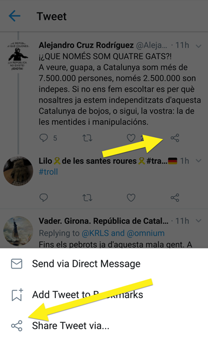

Per a centralitzar la gestió de reports de trolls rebuts i agilitzar la seva verificació i inclusió a les corresponents llistes realitzades per els nostres agents, preguem que en la mesura que sigui posible en notifiqueu aquells perfils que creieu convenients mitjançant la nostra app de reporting de trolls. D'aquesta manera millorem la eficiència del sistema i podem processar un major nombre de notificacions diaries. Tot seguit us expliquem com fer-ho:
Tingues en compte que aquesta aplicació només és compatible amb dispositius mòbils. Si la vols utilitzar en un PC o MAC però, també tens la possibilitat d'instal·lar-te la extensió per a Google Chrome 👉 aquí (en desenvolupament).
Si creus que has detectat un troll, o vols notificar d'un perfil que encaixi en alguna de les nostres llistes i ens ho vols notificar, toca el botó de compartir tweet.
proposa una llista, afegeix un comentari (si vols!) i toca el botó d'enviar. Felicitats, has reportat el teu primer troll!